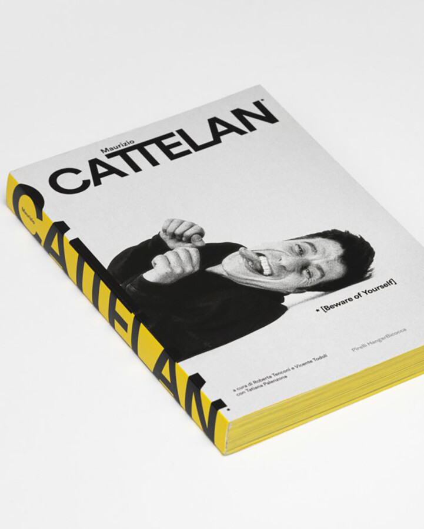

MAURIZIO CATTELAN, BEWARE OF YOURSELF: BOOK SIGNING
Part autobiography, part monograph, part catalogue raisonné, Beware of Yourself, the 400-page volume gathers nearly forty years of the artist’s words—drawn from interviews, essays, and conversations—deconstructed and reassembled into an unpredictable self-portrait told with Cattelan’s characteristic wit and irreverence. Limited copies will be available for purchase on a first-come, first-served basis.
Free and open to the public, the event takes place in conjunction with EXPO Chicago. This signing coincides with RenBen 2026, the Renaissance Society’s annual artist-driven benefit gala conceived by Cattelan, taking place April 8 at the Chicago Athletic Association. For more information on RenBen, please visit HTTPS://RENAISSANCESOCIETY.ORG/EVENTS/1415/RENBEN-2026/
Photo credit: Maurizio Cattelan portrayed by Zeno Zotti at the Monnaie de Paris during the set-up of his exhibition “Not Afraid of Love,” October 8, 2016